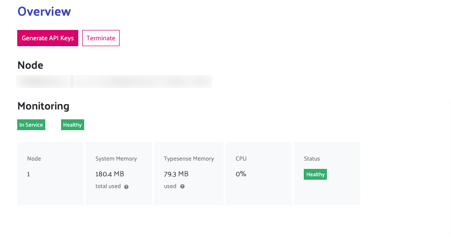
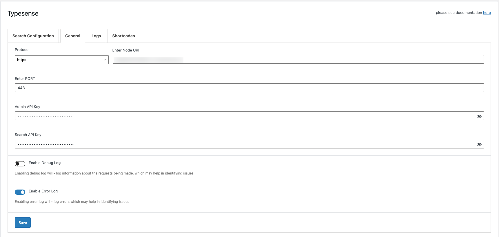

Getting Started
Generate API Keys
Before you do anything else, you must first add the API keys and configure the node.
If you are hosting Typesense locally / on your own server. Then please see the steps here to generate API Keys https://typesense.org/docs/0.22.1/api/api-keys.html
Otherwise, if you have gone with Typesense cloud option - then once the cluster is set up. There will be an option to generate your API keys.
 Above Shows overview of API Keys
Clicking "Generate API Keys" - will generate and download API Keys to be used. Keep this file safe and secure for future use.
The Text file will have the following information

- Protocol: [https]
- Port: [443]
- Admin API Key
- Search Only API Key
- Node
Configuring Plugin
Saving Settings
After retrieving the required info go to WordPress > Admin Area > Typesense > Settings You will be guided to a page like so.

Here - enter the details provided in the text file and click save. Your WordPress install will now be able to connect to your typensese instance.
Setup Autocomplete and Indexing
The next step is to enable and start indexing your posts.
Going to Admin Area > Typesense

Here you can
- Enable which post types should be indexed
- Bulk index the selected post types
- Replace WordPress Search to show autocomplete or instant search popup
Enable Post Types
This option allows you to select which post types to index. By default the plugin allows you to index posts and pages.
Bulk Index
Bulk Index option allows you to index all posts(post types) at once. Indexing means they will add the document into Typesense instant to be easily retrieved.
Replace WordPress Search
When this option is enabled it will replace all search forms that use default WordPress search with either Instant Search popup or autocomplete. Developer Note: It will replace all calls for get_search_form() and the default WordPress search widget or "core/search" block used
Instant Search Popup
Instant Search - replaces all instance of default WordPress search - search forms etc with a popup of instant search. You can customize the appearance of the search by going to appearance > customize > Typesense Search
To add a custom trigger - you can add the class "cm-swt-instant-search-popup--trigger" to your button / svg / anchor tag to trigger the popup Something like the following:
<a href="#" class="cm-swt-instant-search-popup--trigger cm-swt-instant-search-popup--trigger-default"><svg xmlns="http://www.w3.org/2000/svg" class="h-6 w-6" fill="none" viewBox="0 0 24 24" stroke="currentColor" stroke-width="2">
<path stroke-linecap="round" stroke-linejoin="round" d="M21 21l-6-6m2-5a7 7 0 11-14 0 7 7 0 0114 0z" />
</svg></a>
Autocomplete
Replaces all search forms with Autocomplete. See example here https://typesense.codemanas.com/autocomplete/